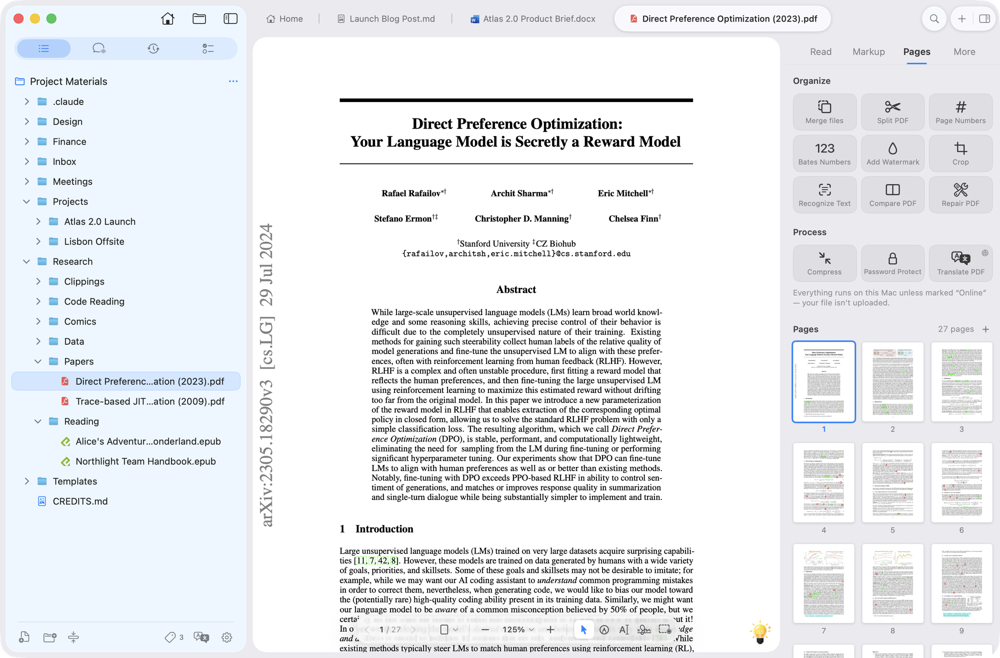
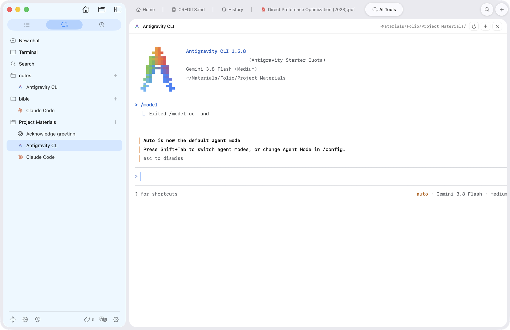
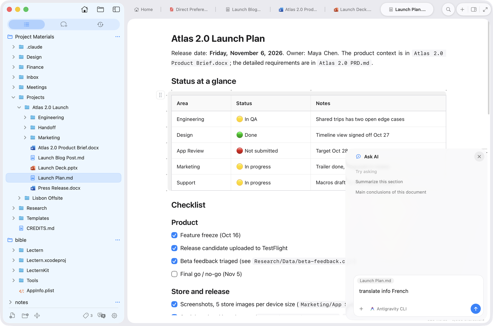
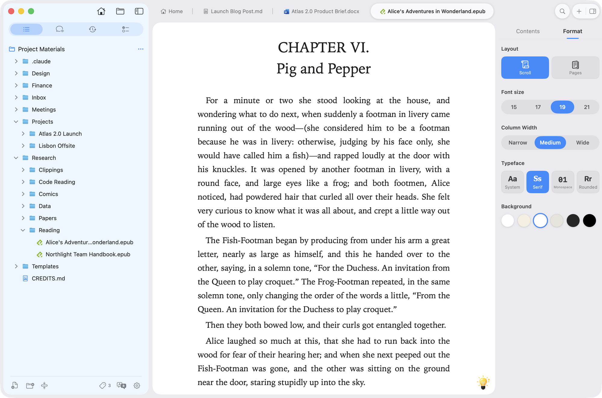

Office 编辑
直接打开编辑微软 Office 系列文件。
Markdown 编辑
精美、好用的 Markdown 编辑器，不用再记语法。
Agent 并行
多个项目忙不过来？Claude Code、ChatGPT、Gemini 并行启动！
版本历史
改错了，误删了文件，没关系，有后悔药。
直接打开编辑微软 Office 系列文件
样式、行距、分页，都在右侧面板。
- 格式、插入、审阅、视图、文档，五个面板各管一件事
- 段落样式、行距、缩进、分页控制一应俱全
- Excel、PowerPoint、Pages、Numbers、Keynote 同样一键打开


PDF 工具箱，都在本机完成
合并、拆分、压缩、文字识别、加密，文件不用上传。
- 页面缩略图一览，整理页面一步到位
- 合并、拆分、裁剪、对比、修复、压缩、加密
- 默认都在本机完成，只有标注「在线」的功能才会联网
精美，好用的Markdown 编辑器
不用再记语法，标题、表格、引用随手插入。
- 所写即所见，整洁清爽
- 数学公式、流程图、代码块自动美化
- 多语言翻译，离线就能用

多个项目忙不过来？Claude Code、ChatGPT、Gemini 并行启动！
命令行智能体按文件夹归类，直接在你的资料里开工。

终端与 AI 标签页
在要修改的文件旁边，直接运行 Claude Code、Codex 等命令行工具。
完整 Git
打开的每个仓库都能看提交历史、Diff 与 Blame。
本地模型
语义搜索、离线翻译与 OCR，在你的 Mac 上运行。
语言服务
通过 LSP 为 Go、Rust、Python、TS/JS、Java 提供代码智能。
任务与日历
任务放在工作旁边，与菜单栏日历联动。
iCloud 同步
支持 iCloud 同步，以及更多翻译引擎。

在文档里，随时问 AI
总结、翻译、找结论，就在当前文档里完成。
- 右下角一键唤出，当前文件自动带上
- 总结这一段、提炼结论
- 也可以让它翻译成其他语言
电子书，像在纸上读
字号、栏宽、字体、背景，随心调整。
- 滚动与分页两种阅读方式
- 字号、栏宽、字体、背景自由调节
- 目录一键跳章


优雅的代码阅读清爽，不累眼
主流编程语言一应俱全。语法着色清爽、缩进对齐整齐，让代码读起来像读散文一样舒服。
- 主流编程语言全覆盖
- 舒服的字号、行距与配色，长时间阅读不累
- 文件夹并排浏览，需要时随时切换
常见格式，都能直接打开
五种主题色，换个心情
石墨、蓝、绿、紫、黄任选，侧栏、标签栏与面板整体换色。
- 五种主题色，一键切换
- 深浅自动跟随系统
- 字体、行高、阅读宽度都能自己调


改错了，误删了文件，没关系，有后悔药
自动保存每个版本，随时找回。
- 自动备份，也可以随时手动保存版本
- 并排对比任意两个版本，增删一目了然
- 每个版本都写明改了哪些文件
不只是看，更是用得顺手。
每一个细节，都为了让你在文件之间穿梭得更安静、更专注。
访达式标签
每个工作空间记得你的滚动位置和上次打开的文件。
秒找任何东西
按内容搜索，不止文件名。笔记里的一句话也能瞬间命中。
多文件夹并列
几个项目同时挂着，左边一棵清晰的文件树。
3D 模型与字体预览
三维模型可以转着看，字体可以一目了然地试。
表格与数据
电子表格与数据表直接查看、排序、筛选。
无干扰阅读
透明标题栏、阅读宽度可调，让文字成为主角。
仍有疑问？
Folio 是一款 Mac 应用，专为 AI 写出的各种文件而做：Claude Code、ChatGPT、Gemini 并行启动，它们生成的 Markdown、Word、PDF 等文件就在旁边打开，直接看、直接改；改错了，还有版本历史当后悔药。
系统自带的预览只能「看一眼就关」。Folio 是为长时间停留打造的工作空间：多标签、跨文件搜索、双向编辑笔记、五种主题色，把「打开一下就走」变成「打开就能开始工作」。
可以。笔记和代码完全可编辑。Office 文档与 PDF 目前是高保真预览，下一版本会开放标注与表单填写。
Folio 支持 macOS 15 及以上版本。Folio Pro 内置本地模型，需要 Apple 芯片（M 系列）的 Mac。
Folio 在你打开文件夹时就悄悄准备好，之后只在文件变化时跟进。一万个文件的大文件夹，输入即可命中，你不会感觉到它在工作。
所有处理都在你的电脑上完成。Folio 不会把你的文件内容上传到任何地方，这是默认行为，没有「关闭云同步」的开关。
Folio 与 Folio Pro 目前都完全免费。将来如果调整定价，会提前公布，早期用户会获得忠诚度优惠。
Every file your AI writes.Read it and edit it right where it is.
Folio Pro 目前免费 · Windows 版即将到来